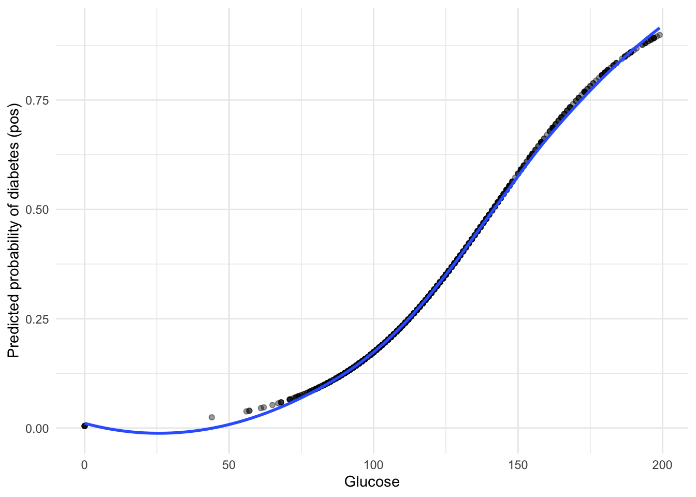
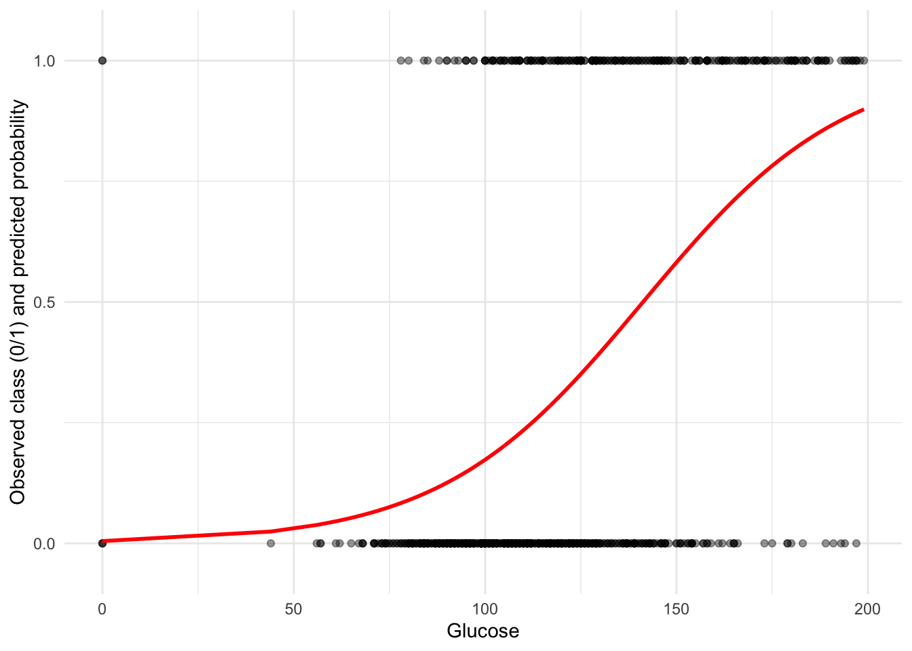

Probability: 0.80Odds: 4.00Log-odds: 1.39Before fitting any model, we need to be clear about how probabilities, odds and log-odds (logits) are related.
Probability: 0.80Odds: 4.00Log-odds: 1.39Log-odds are unbounded and this is what the logistic regression model is linear in.
We will use the PimaIndiansDiabetes data from the mlbench package and keep only a few variables for now as in other exercises.
library(mlbench)
library(tidyverse)
library(tidymodels)
data("PimaIndiansDiabetes")
pima <- PimaIndiansDiabetes %>%
select(glucose, diabetes, mass, age)
glimpse(pima)Rows: 768
Columns: 4
$ glucose <dbl> 148, 85, 183, 89, 137, 116, 78, 115, 197, 125, 110, 168, 139,…
$ diabetes <fct> pos, neg, pos, neg, pos, neg, pos, neg, pos, pos, neg, pos, n…
$ mass <dbl> 33.6, 26.6, 23.3, 28.1, 43.1, 25.6, 31.0, 35.3, 30.5, 0.0, 37…
$ age <dbl> 50, 31, 32, 21, 33, 30, 26, 29, 53, 54, 30, 34, 57, 59, 51, 3…diabetes (factor with levels neg and pos)glucose, mass (BMI), age
Let’s quickly check class balance:
By default, tidymodels will treat the first level of the factor as the “event of interest”.
Here, "neg" comes first, but we want "pos" (diabetes present) to be the event.
pima <- pima %>%
mutate(diabetes = fct_relevel(diabetes, "pos"))
pima |>
count(diabetes) diabetes n
1 pos 268
2 neg 500Now "pos" is the first level and will be the class for which probabilities are predicted.
We start with a simple model: predict diabetes from glucose only.
We use parsnip::logistic_reg() and set the engine to "glm" (which uses the classical GLM under the hood). Here is the link to
logistic_spec <-
logistic_reg(mode = "classification") %>%
set_engine("glm")
logistic_specLogistic Regression Model Specification (classification)
Computational engine: glm We can fit the model directly with a formula, without recipes or workflows for now:
logistic_fit_glucose <-
logistic_spec %>%
fit(diabetes ~ glucose, data = pima)
logistic_fit_glucoseparsnip model object
Call: stats::glm(formula = diabetes ~ glucose, family = stats::binomial,
data = data)
Coefficients:
(Intercept) glucose
5.35008 -0.03787
Degrees of Freedom: 767 Total (i.e. Null); 766 Residual
Null Deviance: 993.5
Residual Deviance: 808.7 AIC: 812.7The fitted model stores the estimated intercept and slope for the log-odds of diabetes given glucose.
We can see the underlying GLM coefficients:
tidy(logistic_fit_glucose)# A tibble: 2 × 5
term estimate std.error statistic p.value
<chr> <dbl> <dbl> <dbl> <dbl>
1 (Intercept) 5.35 0.421 12.7 4.99e-37
2 glucose -0.0379 0.00325 -11.6 2.38e-31This corresponds to the model
\[ \text{logit}\left(P(\text{diabetes} = \text{pos} \mid \text{glucose})\right) = \beta_0 + \beta_1 \cdot \text{glucose}. \]
To get the probability for a given glucose value, we apply the logistic (sigmoid) function:
\[ p(\text{diabetes} = \text{pos}) = \frac{1}{1 + \exp\left(-(\beta_0 + \beta_1 \cdot \text{glucose})\right)}. \]
Let’s compute the odds of having diabetes when glucose = 120 using the fitted model.
coefs <- tidy(logistic_fit_glucose)
#This is the same as in yesterday's practical doing logistic_fit_glucose[["fit]][["coefficients]]
intercept <- coefs$estimate[coefs$term == "(Intercept)"]
slope <- coefs$estimate[coefs$term == "glucose"]
glucose_value <- 120
log_odds_120 <- intercept + slope * glucose_value # linear predictor z
odds_120 <- exp(log_odds_120) # odds
prob_120 <- 1 / (1 + exp(-log_odds_120)) # probability
cat("Log-odds at glucose = 120:", round(log_odds_120, 3), "\n")Log-odds at glucose = 120: 0.805 Odds at glucose = 120 : 2.237 Probability at glucose = 120: 0.691 pima_preds_glucose <-
predict(logistic_fit_glucose, new_data = pima, type = "prob") %>% # type = "prob" gives a column for each class probability
rename(prob_pos = .pred_pos, prob_neg = .pred_neg) %>%
dplyr::bind_cols(pima)
#can also check the function augment instead of predict!
pima_preds_glucose %>%
select(glucose, diabetes, prob_pos, prob_neg) %>%
head()# A tibble: 6 × 4
glucose diabetes prob_pos prob_neg
<dbl> <fct> <dbl> <dbl>
1 148 pos 0.563 0.437
2 85 neg 0.106 0.894
3 183 pos 0.829 0.171
4 89 neg 0.121 0.879
5 137 pos 0.460 0.540
6 116 neg 0.278 0.722We can now visualise how the predicted probability of diabetes changes with glucose.
ggplot(pima_preds_glucose, aes(x = glucose, y = prob_pos)) +
geom_point(alpha = 0.4) +
geom_smooth(method = "loess", se = FALSE) +
labs(
x = "Glucose",
y = "Predicted probability of diabetes (pos)"
) +
theme_minimal()`geom_smooth()` using formula = 'y ~ x'
For comparison, overlay the observed classes (pos / neg) as 0/1:
pima_preds_glucose %>%
mutate(diabetes_numeric = if_else(diabetes == "pos", 1, 0)) |>
ggplot(aes(x = glucose)) +
geom_point(aes(y = diabetes_numeric), alpha = 0.4) +
geom_line(aes(y = prob_pos), colour = "red", linewidth = 1) +
scale_y_continuous(breaks = c(0, 0.5, 1), limits = c(-0.05, 1.05)) +
labs(
x = "Glucose",
y = "Observed class (0/1) and predicted probability"
) +
theme_minimal()
You should see most pos cases (1) having higher predicted probabilities than neg cases (0).
---
title: "(1a) Fitting a logistic regression model - R (tidymodels)"
format: html
execute:
echo: true
message: false
---
## 1. Probabilities, odds and log-odds
Before fitting any model, we need to be clear about how **probabilities**, **odds** and **log-odds (logits)** are related.
```{r}
#| label: prob-odds-logodds
# Define the probability of success
prob <- 0.8
cat(sprintf("Probability: %.2f\n", prob))
# Convert probability to odds
odds <- prob / (1 - prob)
cat(sprintf("Odds: %.2f\n", odds))
# Convert odds to log-odds (logit)
log_odds <- log(odds)
cat(sprintf("Log-odds: %.2f\n", log_odds))
```
- **Probability**: chances of the event happening, between 0 and 1.
- **Odds**: ratio of probability of the event to probability of *no* event
$$ \text{odds} = \frac{p}{1-p} $$
- **Log-odds (logit)**: natural log of the odds
$$ \text{logit}(p) = \log\left(\frac{p}{1-p}\right) $$
Log-odds are unbounded and **this is what the logistic regression model is linear in**.
---
## 2. Data: Pima Indians Diabetes
We will use the `PimaIndiansDiabetes` data from the **mlbench** package and keep only a few variables for now as in other exercises.
```{r, warning=FALSE, message=FALSE}
#| label: load-data
library(mlbench)
library(tidyverse)
library(tidymodels)
data("PimaIndiansDiabetes")
pima <- PimaIndiansDiabetes %>%
select(glucose, diabetes, mass, age)
glimpse(pima)
```
- **Outcome**: `diabetes` (factor with levels `neg` and `pos`)
- **Predictors**: `glucose`, `mass` (BMI), `age`
Let's quickly check class balance:
```{r}
#| label: class-balance
pima %>%
count(diabetes)
```
By default, `tidymodels` will treat the **first level** of the factor as the "event of interest".
Here, `"neg"` comes first, but we want `"pos"` (diabetes present) to be the event.
```{r}
#| label: relevel-outcome
pima <- pima %>%
mutate(diabetes = fct_relevel(diabetes, "pos"))
pima |>
count(diabetes)
```
Now `"pos"` is the first level and will be the class for which probabilities are predicted.
---
## 3. Logistic regression with tidymodels (one predictor)
We start with a simple model: **predict diabetes from glucose only**.
### 3.1 Specify the model
We use `parsnip::logistic_reg()` and set the engine to `"glm"` (which uses the classical GLM under the hood). Here is the link to
```{r}
#| label: specify-model-1
logistic_spec <-
logistic_reg(mode = "classification") %>%
set_engine("glm")
logistic_spec
```
### 3.2 Fit the model
We can fit the model directly with a formula, without recipes or workflows for now:
```{r}
#| label: fit-model-1
logistic_fit_glucose <-
logistic_spec %>%
fit(diabetes ~ glucose, data = pima)
logistic_fit_glucose
```
The fitted model stores the estimated intercept and slope for the **log-odds** of diabetes given glucose.
We can see the underlying GLM coefficients:
```{r}
#| label: coef-model-1
tidy(logistic_fit_glucose)
```
This corresponds to the model
$$
\text{logit}\left(P(\text{diabetes} = \text{pos} \mid \text{glucose})\right)
= \beta_0 + \beta_1 \cdot \text{glucose}.
$$
To get the **probability** for a given glucose value, we apply the logistic (sigmoid) function:
$$
p(\text{diabetes} = \text{pos}) = \frac{1}{1 + \exp\left(-(\beta_0 + \beta_1 \cdot \text{glucose})\right)}.
$$
---
## 4. From model to odds and probabilities
Let's compute the **odds** of having diabetes when `glucose = 120` using the fitted model.
```{r}
#| label: odds-example
coefs <- tidy(logistic_fit_glucose)
#This is the same as in yesterday's practical doing logistic_fit_glucose[["fit]][["coefficients]]
intercept <- coefs$estimate[coefs$term == "(Intercept)"]
slope <- coefs$estimate[coefs$term == "glucose"]
glucose_value <- 120
log_odds_120 <- intercept + slope * glucose_value # linear predictor z
odds_120 <- exp(log_odds_120) # odds
prob_120 <- 1 / (1 + exp(-log_odds_120)) # probability
cat("Log-odds at glucose = 120:", round(log_odds_120, 3), "\n")
cat("Odds at glucose = 120 :", round(odds_120, 3), "\n")
cat("Probability at glucose = 120:", round(prob_120, 3), "\n")
```
---
## 5. Making predictions with tidymodels
```{r}
pima_preds_glucose <-
predict(logistic_fit_glucose, new_data = pima, type = "prob") %>% # type = "prob" gives a column for each class probability
rename(prob_pos = .pred_pos, prob_neg = .pred_neg) %>%
dplyr::bind_cols(pima)
#can also check the function augment instead of predict!
pima_preds_glucose %>%
select(glucose, diabetes, prob_pos, prob_neg) %>%
head()
```
### 5.1 Visualising the fitted curve
We can now visualise how the predicted probability of diabetes changes with glucose.
```{r}
#| label: plot-prob-vs-glucose
ggplot(pima_preds_glucose, aes(x = glucose, y = prob_pos)) +
geom_point(alpha = 0.4) +
geom_smooth(method = "loess", se = FALSE) +
labs(
x = "Glucose",
y = "Predicted probability of diabetes (pos)"
) +
theme_minimal()
```
For comparison, overlay the observed classes (`pos` / `neg`) as 0/1:
```{r}
#| label: plot-observed-vs-prob
pima_preds_glucose %>%
mutate(diabetes_numeric = if_else(diabetes == "pos", 1, 0)) |>
ggplot(aes(x = glucose)) +
geom_point(aes(y = diabetes_numeric), alpha = 0.4) +
geom_line(aes(y = prob_pos), colour = "red", linewidth = 1) +
scale_y_continuous(breaks = c(0, 0.5, 1), limits = c(-0.05, 1.05)) +
labs(
x = "Glucose",
y = "Observed class (0/1) and predicted probability"
) +
theme_minimal()
```
You should see most `pos` cases (1) having higher predicted probabilities than `neg` cases (0).